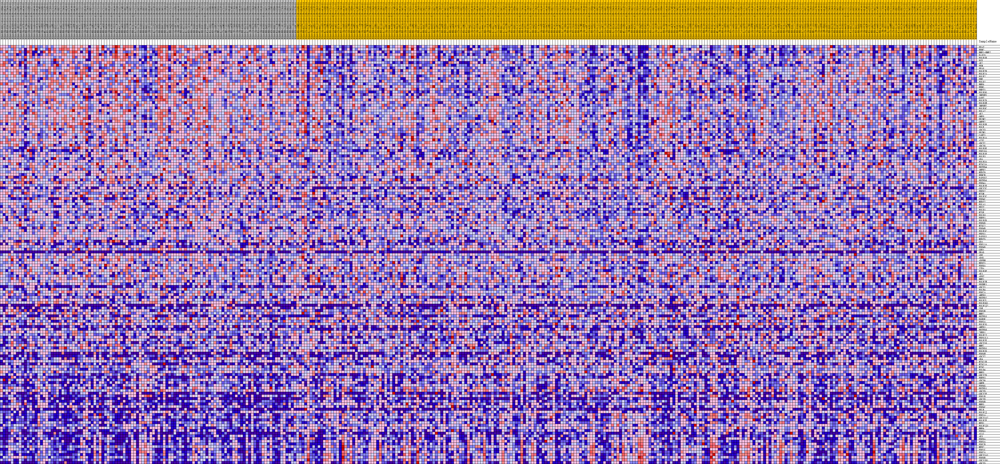
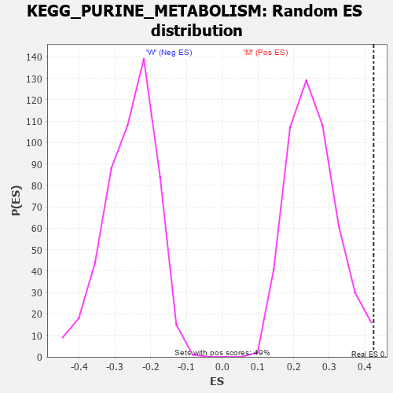

Profile of the Running ES Score & Positions of GeneSet Members on the Rank Ordered List
| Dataset | MUC16.MUC16.cls#M_versus_W.MUC16.cls#M_versus_W_repos |
| Phenotype | MUC16.cls#M_versus_W_repos |
| Upregulated in class | M |
| GeneSet | KEGG_PURINE_METABOLISM |
| Enrichment Score (ES) | 0.42388237 |
| Normalized Enrichment Score (NES) | 1.6783714 |
| Nominal p-value | 0.008097166 |
| FDR q-value | 0.116426505 |
| FWER p-Value | 0.505 |
| PROBE | DESCRIPTION (from dataset) | GENE SYMBOL | GENE_TITLE | RANK IN GENE LIST | RANK METRIC SCORE | RUNNING ES | CORE ENRICHMENT | |
|---|---|---|---|---|---|---|---|---|
| 1 | PPAT | na | 14 | 0.282 | 0.0186 | Yes | ||
| 2 | RRM2 | na | 27 | 0.262 | 0.0359 | Yes | ||
| 3 | NME1-NME2 | na | 47 | 0.251 | 0.0523 | Yes | ||
| 4 | PAICS | na | 63 | 0.242 | 0.0682 | Yes | ||
| 5 | POLR1B | na | 153 | 0.219 | 0.0812 | Yes | ||
| 6 | DCK | na | 166 | 0.215 | 0.0953 | Yes | ||
| 7 | AK7 | na | 214 | 0.208 | 0.1084 | Yes | ||
| 8 | PKM | na | 231 | 0.205 | 0.1218 | Yes | ||
| 9 | PFAS | na | 266 | 0.202 | 0.1346 | Yes | ||
| 10 | POLR2B | na | 267 | 0.202 | 0.1481 | Yes | ||
| 11 | POLR2A | na | 392 | 0.188 | 0.1584 | Yes | ||
| 12 | POLE2 | na | 480 | 0.181 | 0.1689 | Yes | ||
| 13 | PNP | na | 499 | 0.179 | 0.1805 | Yes | ||
| 14 | POLD2 | na | 521 | 0.178 | 0.1920 | Yes | ||
| 15 | NME6 | na | 533 | 0.177 | 0.2037 | Yes | ||
| 16 | RRM1 | na | 614 | 0.172 | 0.2137 | Yes | ||
| 17 | PNPT1 | na | 707 | 0.166 | 0.2232 | Yes | ||
| 18 | POLR3G | na | 709 | 0.166 | 0.2342 | Yes | ||
| 19 | IMPDH1 | na | 760 | 0.163 | 0.2442 | Yes | ||
| 20 | GART | na | 799 | 0.161 | 0.2543 | Yes | ||
| 21 | POLR2D | na | 1096 | 0.146 | 0.2587 | Yes | ||
| 22 | POLR3H | na | 1107 | 0.146 | 0.2682 | Yes | ||
| 23 | IMPDH2 | na | 1116 | 0.146 | 0.2778 | Yes | ||
| 24 | POLR3C | na | 1331 | 0.137 | 0.2831 | Yes | ||
| 25 | POLA2 | na | 1420 | 0.134 | 0.2904 | Yes | ||
| 26 | AK2 | na | 1429 | 0.133 | 0.2991 | Yes | ||
| 27 | GMPS | na | 1723 | 0.124 | 0.3021 | Yes | ||
| 28 | PRIM2 | na | 1923 | 0.119 | 0.3064 | Yes | ||
| 29 | GMPR2 | na | 2037 | 0.115 | 0.3121 | Yes | ||
| 30 | POLR3B | na | 2050 | 0.115 | 0.3195 | Yes | ||
| 31 | POLE | na | 2065 | 0.115 | 0.3269 | Yes | ||
| 32 | ADCY3 | na | 2317 | 0.109 | 0.3297 | Yes | ||
| 33 | PRIM1 | na | 2340 | 0.109 | 0.3365 | Yes | ||
| 34 | CANT1 | na | 2591 | 0.104 | 0.3389 | Yes | ||
| 35 | POLR1A | na | 2645 | 0.103 | 0.3448 | Yes | ||
| 36 | ATIC | na | 2873 | 0.099 | 0.3473 | Yes | ||
| 37 | ADCY7 | na | 3090 | 0.095 | 0.3497 | Yes | ||
| 38 | ADCY6 | na | 3355 | 0.091 | 0.3510 | Yes | ||
| 39 | POLR3K | na | 3399 | 0.090 | 0.3562 | Yes | ||
| 40 | PDE10A | na | 3418 | 0.090 | 0.3619 | Yes | ||
| 41 | POLR1E | na | 3433 | 0.090 | 0.3677 | Yes | ||
| 42 | POLE3 | na | 3467 | 0.089 | 0.3730 | Yes | ||
| 43 | ADA | na | 3634 | 0.087 | 0.3758 | Yes | ||
| 44 | POLR3A | na | 3736 | 0.086 | 0.3797 | Yes | ||
| 45 | NT5C3A | na | 3781 | 0.085 | 0.3846 | Yes | ||
| 46 | ENTPD4 | na | 3800 | 0.084 | 0.3899 | Yes | ||
| 47 | AMPD2 | na | 3958 | 0.082 | 0.3925 | Yes | ||
| 48 | NUDT9 | na | 3960 | 0.082 | 0.3980 | Yes | ||
| 49 | RRM2B | na | 4053 | 0.081 | 0.4018 | Yes | ||
| 50 | PAPSS2 | na | 4265 | 0.078 | 0.4032 | Yes | ||
| 51 | ENTPD6 | na | 4368 | 0.077 | 0.4065 | Yes | ||
| 52 | PDE4A | na | 4524 | 0.075 | 0.4087 | Yes | ||
| 53 | POLR2E | na | 4668 | 0.073 | 0.4109 | Yes | ||
| 54 | GUCY2C | na | 4676 | 0.073 | 0.4157 | Yes | ||
| 55 | PRPS2 | na | 4713 | 0.073 | 0.4199 | Yes | ||
| 56 | NT5M | na | 4758 | 0.072 | 0.4239 | Yes | ||
| 57 | POLR2C | na | 5100 | 0.068 | 0.4222 | No | ||
| 58 | PDE4C | na | 5695 | 0.062 | 0.4156 | No | ||
| 59 | NUDT2 | na | 5996 | 0.059 | 0.4141 | No | ||
| 60 | POLA1 | na | 6362 | 0.055 | 0.4111 | No | ||
| 61 | FHIT | na | 7013 | 0.049 | 0.4026 | No | ||
| 62 | POLD1 | na | 7067 | 0.048 | 0.4049 | No | ||
| 63 | NT5E | na | 7319 | 0.046 | 0.4034 | No | ||
| 64 | POLD3 | na | 7521 | 0.045 | 0.4028 | No | ||
| 65 | ENPP1 | na | 7565 | 0.044 | 0.4049 | No | ||
| 66 | POLR3D | na | 7885 | 0.042 | 0.4020 | No | ||
| 67 | PDE6D | na | 8123 | 0.040 | 0.4003 | No | ||
| 68 | NT5C2 | na | 8338 | 0.038 | 0.3990 | No | ||
| 69 | PDE4B | na | 8344 | 0.038 | 0.4015 | No | ||
| 70 | POLR1C | na | 8352 | 0.038 | 0.4039 | No | ||
| 71 | PRPS1 | na | 8429 | 0.038 | 0.4050 | No | ||
| 72 | PAPSS1 | na | 8577 | 0.036 | 0.4048 | No | ||
| 73 | NUDT5 | na | 8926 | 0.033 | 0.4007 | No | ||
| 74 | GDA | na | 9156 | 0.032 | 0.3987 | No | ||
| 75 | PDE11A | na | 9294 | 0.031 | 0.3982 | No | ||
| 76 | PDE4D | na | 9333 | 0.030 | 0.3995 | No | ||
| 77 | GUK1 | na | 9642 | 0.028 | 0.3958 | No | ||
| 78 | URAD | na | 10019 | 0.025 | 0.3906 | No | ||
| 79 | ADK | na | 11202 | 0.016 | 0.3703 | No | ||
| 80 | ADSL | na | 11266 | 0.016 | 0.3702 | No | ||
| 81 | ADPRM | na | 11460 | 0.014 | 0.3676 | No | ||
| 82 | HPRT1 | na | 12472 | 0.008 | 0.3498 | No | ||
| 83 | PDE8A | na | 12492 | 0.008 | 0.3500 | No | ||
| 84 | ITPA | na | 12725 | 0.006 | 0.3462 | No | ||
| 85 | POLR3F | na | 12755 | 0.006 | 0.3461 | No | ||
| 86 | AK1 | na | 13020 | 0.004 | 0.3416 | No | ||
| 87 | APRT | na | 13126 | 0.004 | 0.3399 | No | ||
| 88 | NME1 | na | 13199 | 0.003 | 0.3388 | No | ||
| 89 | POLR2H | na | 15019 | -0.000 | 0.3058 | No | ||
| 90 | PRUNE1 | na | 15241 | -0.001 | 0.3019 | No | ||
| 91 | ADCY1 | na | 15524 | -0.002 | 0.2969 | No | ||
| 92 | POLE4 | na | 15533 | -0.002 | 0.2969 | No | ||
| 93 | PDE7A | na | 15770 | -0.004 | 0.2929 | No | ||
| 94 | AMPD3 | na | 16171 | -0.006 | 0.2860 | No | ||
| 95 | ENTPD2 | na | 16205 | -0.006 | 0.2858 | No | ||
| 96 | POLR2L | na | 16423 | -0.007 | 0.2824 | No | ||
| 97 | POLR3GL | na | 17057 | -0.011 | 0.2716 | No | ||
| 98 | POLR2J2 | na | 17220 | -0.012 | 0.2695 | No | ||
| 99 | XDH | na | 17630 | -0.014 | 0.2629 | No | ||
| 100 | PDE3B | na | 18103 | -0.016 | 0.2555 | No | ||
| 101 | NME2 | na | 18443 | -0.018 | 0.2505 | No | ||
| 102 | ENTPD3 | na | 18894 | -0.020 | 0.2437 | No | ||
| 103 | DGUOK | na | 19012 | -0.021 | 0.2429 | No | ||
| 104 | PDE5A | na | 20149 | -0.026 | 0.2240 | No | ||
| 105 | POLR2G | na | 23404 | -0.040 | 0.1676 | No | ||
| 106 | AMPD1 | na | 23689 | -0.041 | 0.1652 | No | ||
| 107 | ENTPD8 | na | 24426 | -0.044 | 0.1548 | No | ||
| 108 | ZNRD1 | na | 24520 | -0.044 | 0.1561 | No | ||
| 109 | POLR2I | na | 24908 | -0.046 | 0.1521 | No | ||
| 110 | PRPS1L1 | na | 24977 | -0.046 | 0.1539 | No | ||
| 111 | POLR2K | na | 25197 | -0.047 | 0.1531 | No | ||
| 112 | ADCY10 | na | 25750 | -0.049 | 0.1464 | No | ||
| 113 | NME7 | na | 25959 | -0.050 | 0.1459 | No | ||
| 114 | ENTPD5 | na | 26271 | -0.051 | 0.1437 | No | ||
| 115 | POLR1D | na | 27405 | -0.055 | 0.1268 | No | ||
| 116 | PDE6H | na | 28776 | -0.060 | 0.1059 | No | ||
| 117 | ADCY2 | na | 30322 | -0.065 | 0.0822 | No | ||
| 118 | AK4 | na | 30631 | -0.066 | 0.0810 | No | ||
| 119 | NT5C1B | na | 30819 | -0.067 | 0.0821 | No | ||
| 120 | NT5C1A | na | 30840 | -0.067 | 0.0862 | No | ||
| 121 | NT5C | na | 31035 | -0.067 | 0.0871 | No | ||
| 122 | POLD4 | na | 32971 | -0.073 | 0.0569 | No | ||
| 123 | NME3 | na | 36349 | -0.084 | 0.0012 | No | ||
| 124 | GUCY2D | na | 36412 | -0.084 | 0.0057 | No | ||
| 125 | ENPP3 | na | 39329 | -0.093 | -0.0410 | No | ||
| 126 | ADCY4 | na | 39739 | -0.095 | -0.0421 | No | ||
| 127 | GMPR | na | 41215 | -0.100 | -0.0622 | No | ||
| 128 | PDE6G | na | 42965 | -0.106 | -0.0868 | No | ||
| 129 | ENTPD1 | na | 43303 | -0.107 | -0.0858 | No | ||
| 130 | ADCY9 | na | 43334 | -0.107 | -0.0792 | No | ||
| 131 | GUCY2F | na | 43581 | -0.108 | -0.0764 | No | ||
| 132 | PDE1B | na | 44406 | -0.111 | -0.0839 | No | ||
| 133 | ADCY8 | na | 45052 | -0.114 | -0.0881 | No | ||
| 134 | PDE6B | na | 45784 | -0.117 | -0.0935 | No | ||
| 135 | NME5 | na | 46048 | -0.118 | -0.0904 | No | ||
| 136 | PDE6C | na | 48005 | -0.127 | -0.1174 | No | ||
| 137 | PKLR | na | 48866 | -0.132 | -0.1242 | No | ||
| 138 | POLR2J | na | 49336 | -0.135 | -0.1237 | No | ||
| 139 | PDE1A | na | 49549 | -0.137 | -0.1184 | No | ||
| 140 | GUCY1A2 | na | 50522 | -0.143 | -0.1265 | No | ||
| 141 | POLR2F | na | 50914 | -0.147 | -0.1238 | No | ||
| 142 | NPR1 | na | 50915 | -0.147 | -0.1140 | No | ||
| 143 | POLR2J3 | na | 51012 | -0.147 | -0.1059 | No | ||
| 144 | NME4 | na | 51118 | -0.148 | -0.0979 | No | ||
| 145 | PDE6A | na | 51798 | -0.155 | -0.0999 | No | ||
| 146 | ALLC | na | 52040 | -0.157 | -0.0938 | No | ||
| 147 | AK5 | na | 53343 | -0.176 | -0.1056 | No | ||
| 148 | PDE9A | na | 53463 | -0.179 | -0.0959 | No | ||
| 149 | PDE3A | na | 53560 | -0.181 | -0.0856 | No | ||
| 150 | PDE7B | na | 54177 | -0.197 | -0.0836 | No | ||
| 151 | NPR2 | na | 54222 | -0.198 | -0.0712 | No | ||
| 152 | PDE1C | na | 54303 | -0.200 | -0.0593 | No | ||
| 153 | PDE2A | na | 54540 | -0.210 | -0.0496 | No | ||
| 154 | GUCY1A1 | na | 54818 | -0.225 | -0.0396 | No | ||
| 155 | PDE8B | na | 54906 | -0.230 | -0.0258 | No | ||
| 156 | GUCY1B1 | na | 54993 | -0.236 | -0.0116 | No | ||
| 157 | ADCY5 | na | 55113 | -0.248 | 0.0028 | No |

